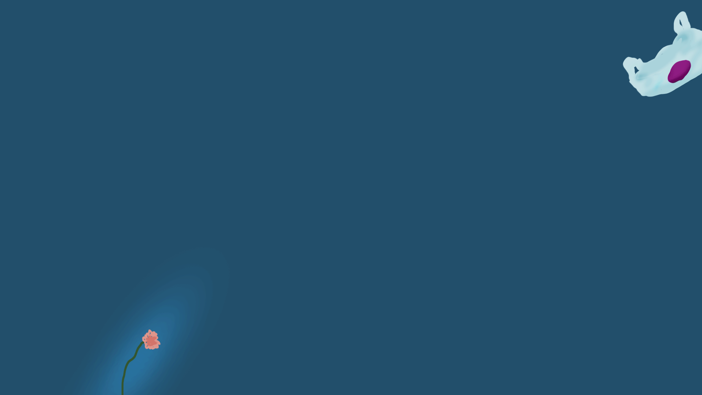

Flowers are rare and few. I save them! Njord has always lived in the city and have floated from place to place, never been 4ed down. They are full of anxiety trying to always please other people’s needs and be of use. They oFen get overlooked and mistaken for trash. They are oFen a depressed and anxious bag. Njord usually walks with a heavy, sunken almost slow pace. They can fly and catch the wind, when it blows. They have a low almost heavy energy about them.
